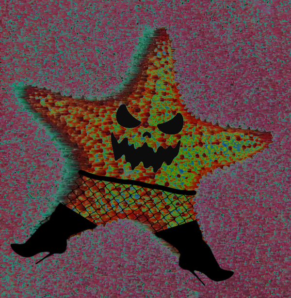

Life of the Starfish
In the murky depths of scientific ambition and moral compromise lies the sinister creation that is the malevolent starfish, a grotesque result of twisted experiments and unethical manipulation. This abhorrent creature, born of Dr. Victor Selene's insatiable curiosity and reckless disregard for the boundaries of nature, is a chilling testament to the dark possibilities that lurk within the human psyche. This abomination, once an innocent starfish, underwent a malevolent metamorphosis, becoming an aquatic predator of unparalleled ferocity. Its once benign form became a nightmare of spines and thorns, a visual representation of the horrors that emerged from the depths of Dr. Selene's laboratory. Released into the oceans by a careless error, the evil starfish multiplied rapidly, infesting coral reefs and turning pristine underwater landscapes into scenes of carnage and destruction. It displayed an almost sadistic joy in its predatory pursuits, leaving behind a trail of devastation that extended far beyond the natural order of the sea. As marine experts and champions of ethical science banded together to combat this abyssal horror, they found themselves confronting not only a voracious menace but the grim legacy of Dr. Selene's unethical experimentations. The evil starfish serves as a haunting reminder of the responsibility that comes with scientific exploration and the consequences that can manifest when these boundaries are breached. In the annals of marine biology and ethical research, the malevolent starfish stands as a chilling chapter, a warning etched in the annals of science that compels us to ponder the boundaries of our curiosity and the ethical considerations that guide our quest for knowledge.
The Starfish's Quotes
- "When the ocean whispers my name, it's not in reverence but in fear. I am the starfish of nightmares, the destroyer of dreams."
- "My spines may be sharp, but my purpose is sharper. I am the balance, the harbinger of renewal through destruction."
- "In the dance of life and death, I waltz with the coral, leaving destruction in my wake. Nature's grand performance, and I am the star."
- "Coral, sweet coral, you wither before my spines like flowers in the desert. I am the devourer of your beauty."